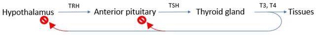
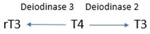

· Intro
· Metabolic effects
· Organ system effects
|
Structure |
· Polypeptide · Contains iodine |
|
Synthesis |
· In follicular cells |
|
Axis |

 |
|
Thyroid hormone comparison |
· 93% T4, 1x activity · 7% T3, 3-5x activity · rT3 inactive |
|
Mechanism of action |
· Multiple receptor subtypes · Receptors are nuclear transcription factor, binds THRE · ↑ or ↓ gene expression |
|
Time course |
· Onset of action: 6-8 hours IV, 3-5 days oral · Duration of effect: T3 1 day, T4 7 days o Longer if hypothyroid o Shorter if hyperthyroid |
|
Overall |
· Effects are dose-dependent · ↑Metabolic rate (max 2x) o ↑Na+K+ATPase activity o ↑Catecholamine release o Permissive effects · Exempt tissues: uterus, testes, spleen, anterior pituitary |
|
Liver |
· ↑Glycolysis, glycogenolysis, gluconeogenesis, lipolysis · Protein: synthesis if ↔thyroid, breakdown and myopathy if ↑thyroid |
|
Muscle |
· ↑Glycogenolysis, glycolysis · Protein: synthesis if ↔thyroid, breakdown if ↑thyroid (-> wasting) |
|
Adipose |
· ↑Lipolysis -> fat loss |
|
Bone |
· ↑Formation if ↔thyroid, ↑breakdown if ↑thyroid (-> osteoporosis) |
|
GIT |
· ↑Carbohydrate absorption |
|
Cardiovascular |
· ↑HR, CO, ↓SVR, MvO2, CBF (BP may be unchanged) o Metabolic autoregulation -> vasodilatation -> ↑venous return o ↑Catecholamines o Permissive effect on catecholamines o ↑Number of myocardial β1 adrenoceptors |
|
Respiratory |
· ↑RR and TV o ↑Metabolic rate -> ↑VCO2 (Krebs cycle) |
|
CNS |
· In utero: o Necessary for normal brain growth and development · In adults: ↑thyroid -> o Anxiety, restlessness, tremor (brain) o Hyperreflexia (↑spinal cord excitability) |
|
Other |
· ↓Thyroid -> dry skin, thinning hair · ↑Thyroid -> proptosis, ↑LPS activity, thyroid stare |